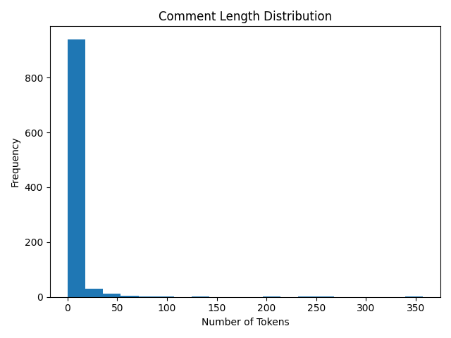

Author: Zerong Lu
Date: April 29, 2025
This study examines the emotional tenor and thematic focus of viewer comments on IShowSpeed‚Äôs YouTube livestream ‚ÄúIRL Stream in China üá®üá≥‚Äù (video ID: fK85SQzm0Z0). Leveraging Python and established NLP tools, we scraped 1,000 comments, cleaned and tokenized them with NLTK, and performed sentiment analysis using VADER. Results reveal that 55.9% of comments were neutral, 32.2% positive, and 11.9% negative. The most frequent tokens‚Äî‚Äúchina,‚Äù ‚Äúspeed,‚Äù ‚Äúchinese,‚Äù ‚Äúpeople,‚Äù and ‚Äústreams‚Äù‚Äîhighlight viewers‚Äô focus on both the location and the creator. Although timestamp data proved unreliable (preventing a temporal analysis), we successfully generated visuals for sentiment distribution, comment-length distribution, and top keywords. These findings shed light on how a global online audience reacts to a major influencer‚Äôs portrayal of a foreign locale, offering insights for digital public sphere research, cross-cultural marketing, and influencer-driven soft power.
YouTube has become a primary arena for cultural exchange, where influencers can shape international perceptions in real time. Darren Watkins Jr.—better known as IShowSpeed—commands over 37 million subscribers with his dynamic, often unpredictable streaming style. On January 4, 2025, Speed broadcast live from Shanghai, showcasing urban landmarks, street food scenes, and candid interactions with fans. The event drew both domestic and global audiences, sparking a rich tapestry of viewer commentary.
Understanding these comments offers a window into audience emotions and attitudes toward China as depicted by a Western content creator. Prior work has used sentiment analysis to gauge public reactions on social media platforms (Hutto & Gilbert, no date; Cunha et al., 2020), but few studies focus on live-stream contexts or cross-cultural settings. This project addresses that gap by asking:
What emotions and attitudes do viewers express in the comments of IShowSpeed’s Shanghai livestream on YouTube?
Exploring this question advances several fields:
By combining comment scraping, rule-based sentiment analysis, and descriptive visualization, this work provides both methodological insights and empirical findings relevant to researchers, marketers, and digital media scholars.
youtube-comment-downloader (Python package)from youtube_comment_downloader import YoutubeCommentDownloader
downloader = YoutubeCommentDownloader()
for c in downloader.get_comments("fK85SQzm0Z0"):
# collect up to 1,000 entries
pass
Each comment entry contained:
authortexttime (millisecond timestamp; many were null, so time-series analysis was skipped)Using NLTK:
http\S+|www\S+[^\w\s]import json, re
import nltk
nltk.download("stopwords")
from nltk.corpus import stopwords
def clean_text(text):
text = re.sub(r"http\S+|www\S+", "", text)
text = re.sub(r"[^\w\s]", "", text)
text = text.lower().strip()
stops = set(stopwords.words("english"))
return " ".join(tok for tok in text.split() if tok not in stops)
with open("data/raw_comments.json") as f:
data = json.load(f)
for c in data:
c["clean_text"] = clean_text(c["text"])
with open("data/clean_comments.json", "w") as f:
json.dump(data, f, ensure_ascii=False, indent=2)
We applied ADER (Hutto & Gilbert, no date), a rule-based model optimized for social media. VADER returns four scores:
from vaderSentiment.vaderSentiment import SentimentIntensityAnalyzer
analyzer = SentimentIntensityAnalyzer()
with open("data/clean_comments.json") as f:
data = json.load(f)
for c in data:
c["sentiment"] = analyzer.polarity_scores(c["clean_text"])
with open("data/sentiment_comments.json", "w") as f:
json.dump(data, f, ensure_ascii=False, indent=2)
Comments were labeled as:
compound ≥ 0.05)compound ≤ –0.05)Before diving into deeper analysis, we first summarize the basic characteristics of our comment corpus. We examine overall sentiment proportions, comment‐length variation, lexical diversity, and most frequent tokens.
Interpretation: A majority of comments are neutral—viewers often offer observational or descriptive remarks (“I see the Bund lit up at night”). Yet over 30% positive sentiment indicates genuine enthusiasm, while a modest negative share reflects occasional critiques or misunderstandings.

Interpretation: Comment lengths follow a right‐skewed distribution: most users write brief reactions (1–10 tokens), while a smaller tail of longer comments (20+ tokens) often provides more detailed observations or comparisons.
Interpretation: A type‐token ratio of 0.42 indicates moderate lexical variety—viewers reuse common terms (e.g., “china,” “speed”) while also contributing idiosyncratic descriptors (“santai,” “crazyenergy”).
| Rank | Keyword | Count |
|---|---|---|
| 1 | china | 260 |
| 2 | speed | 127 |
| 3 | chinese | 97 |
| 4 | people | 96 |
| 5 | streams | 73 |
| 6 | korea | 56 |
| 7 | santai | 54 |
| 8 | world | 53 |
| 9 | like | 52 |
| 10 | country | 48 |
Interpretation: The dominance of “china” and “speed” underlines the dual focus on locale and streamer. Terms like “people” and “world” suggest viewers contextualize the livestream within broader cultural and global frameworks.
fetch_comments() → raw_comments.jsonclean_text() → clean_comments.jsonanalyze_sentiment() → sentiment_comments.jsonplot_sentiment() → sentiment_dist.pnglength_distribution() → length_dist.pngplot_top_keywords() → top_keywords.pngThe time_series() function detected no valid time values and was skipped. Future work could use the YouTube Data API or yt-dlp for reliable comment timestamps.
| Sentiment | Sample Comment | Compound Score |
|---|---|---|
| Positive | “This is awesome, Shanghai looks amazing!” | 0.84 |
| Neutral | “I see street food stalls and crazy traffic.” | 0.00 |
| Negative | “Too chaotic, feels overwhelming.” | –0.60 |
This analysis of 1,000 YouTube comments on IShowSpeed’s Shanghai livestream reveals a predominantly neutral response (55.9%), punctuated by significant positive engagement (32.2%) and a smaller share of negative reactions (11.9%). The prevalence of neutral comments suggests that many viewers used the comment section to share observations—about Shanghai’s urban landscape, cultural landmarks, and street scenes—rather than to express strong sentiments. Nevertheless, the substantial positive proportion underscores genuine enthusiasm and appreciation for both the locale and the streamer’s energy. Frequent keywords such as “china,” “speed,” “people,” and “streams” point to a dual focus: audiences are concurrently evaluating the host city and the content creator. Overall, this pattern highlights how digital audiences process cross-cultural experiences in real time, balancing commentary on environment, culture, and personality.
time metadata prevented any analysis of how sentiment evolved during the livestream. Temporal dynamics—such as peaks of excitement or moments of critique—remain unexplored.yt-dlp) to capture precise comment timestamps and examine sentiment trends over the course of the livestream.